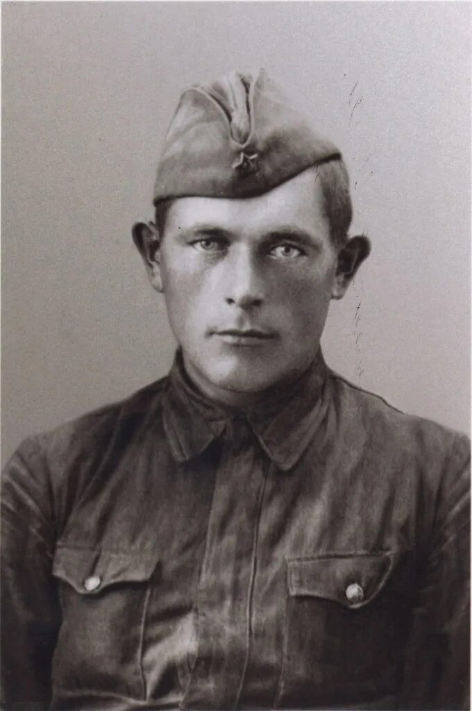
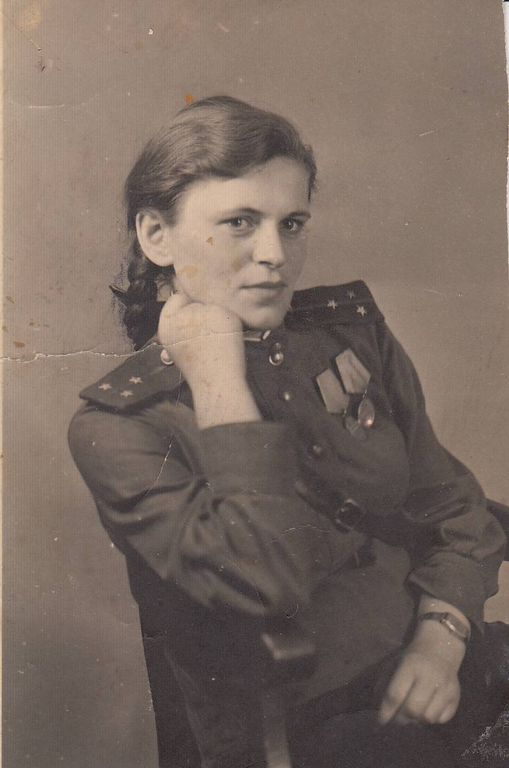
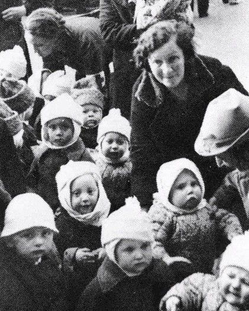
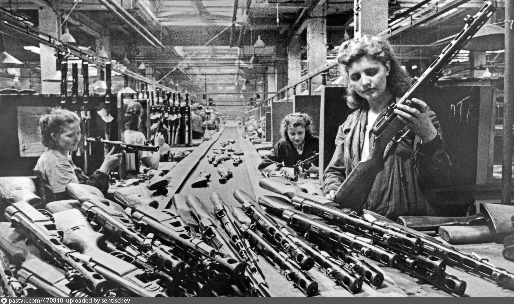
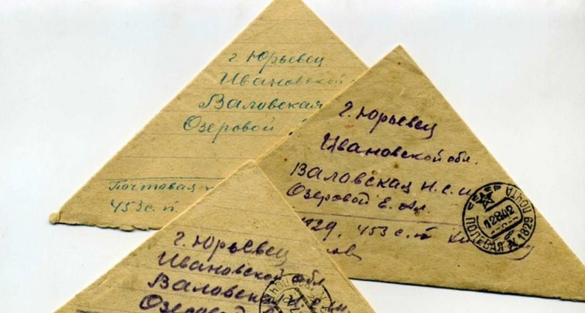
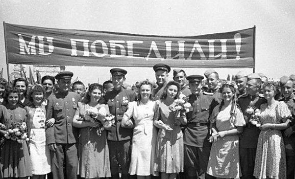

Алексей Иванович Кравцов
В 1941 году Алексей Иванович был призван в Красную Армию из небольшого села Подгорное. Участвовал в Сталинградской битве, был ранен, но вернулся в строй. В 1943 году освобождал Харьков, форсировал Днепр. За мужество награждён медалью «За отвагу» и Орденом Красной Звезды. Победу встретил в Берлине, расписался на стене Рейхстага. После войны работал учителем истории и всегда говорил: «Война — это боль, но мы победили ради жизни».
«Здравствуй, моя родная! Пишу под аккорды канонады. Мы отвоевали ещё одну высоту. Вчера хоронили товарища Колю, но мы не сломлены. Береги детей, Люба. Скоро вернусь с Победой. Целую, твой Алексей.»
✉️ Письмо хранится в семейном архиве.

Анна Михайловна Кравцова
Когда началась война, Анне Михайловне было 20 лет. Её муж ушёл на фронт, а она осталась с двумя маленькими детьми. Днём работала на заводе по выпуску снарядов, ночами — в госпитале медсестрой. Несмотря на голод и холод, она сохранила веру в Победу. Награждена медалью «За доблестный труд в Великой Отечественной войне». Её история — это история миллионов женщин, которые выстояли и приближали Победу в тылу.

Зинаида Алексеевна (1938 г.р.)
Зинаиде было всего 3 года, когда началась война. Семью эвакуировали в Свердловскую область. Её детство прошло в землянке, вместо игрушек — гильзы от патронов. Позже она рассказывала: «Мы не знали шоколада, зато помнили запах лепёшек из лебеды. Но даже в те годы взрослые старались создать праздник, читали нам книги при коптилке». В 1945 году, когда объявили о Победе, она выбежала на улицу и плакала от счастья, сама не понимая почему. Сейчас бабушке 86 лет, она передаёт память внукам и правнукам.
Семейные награды и реликвии
⭐ Награды хранятся в семейном музее, ежегодно участвуют в акции «Бессмертный полк».




🌳 Родословная в годы войны
Иван Кравцов (погиб под Ржевом) — Алексей Кравцов (ветеран) — Зинаида Кравцова (ребёнок войны) — и более 12 родственников, трудившихся в тылу и на передовой.
Мы помним каждого, кто отстоял мир!
Минута молчания — вечная память
Пусть поколения знают, какой ценой завоевано счастье.
Склоняем головы перед мужеством солдат и тружеников тыла.
Никто не забыт, ничто не забыто.
Школьный музей
Материалы о нашей семье переданы в музей боевой славы школы №15. Ежегодно проходят уроки мужества с участием потомков.
Бессмертный полк онлайн
Каждый год 9 мая мы проносим портреты Алексея Кравцова и Анны Кравцовой в рядах Бессмертного полка. Имя деда — в базе «Память народа».
Книга памяти
В 2020 году вышла книга «Солдаты Победы: семейные хроники», где напечатан очерк о династии Кравцовых.